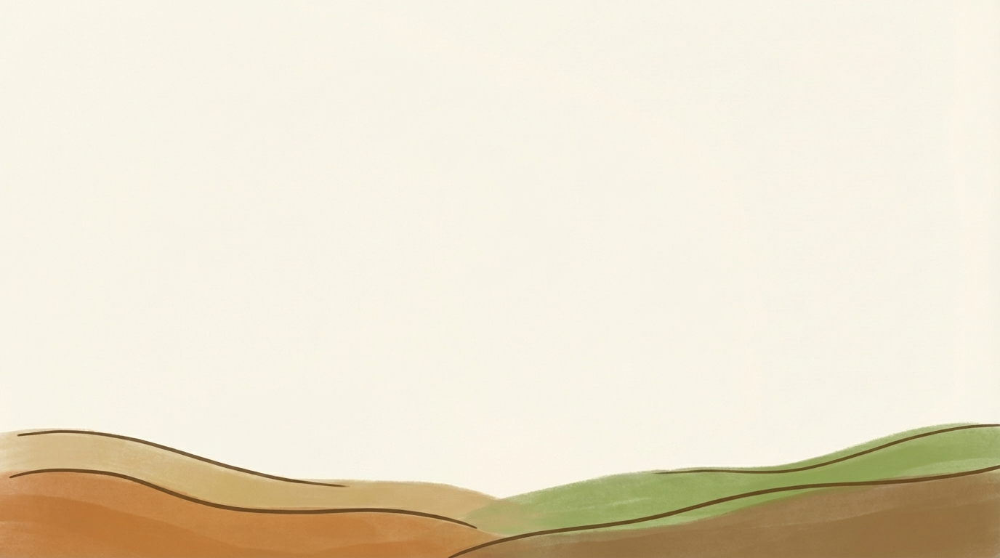
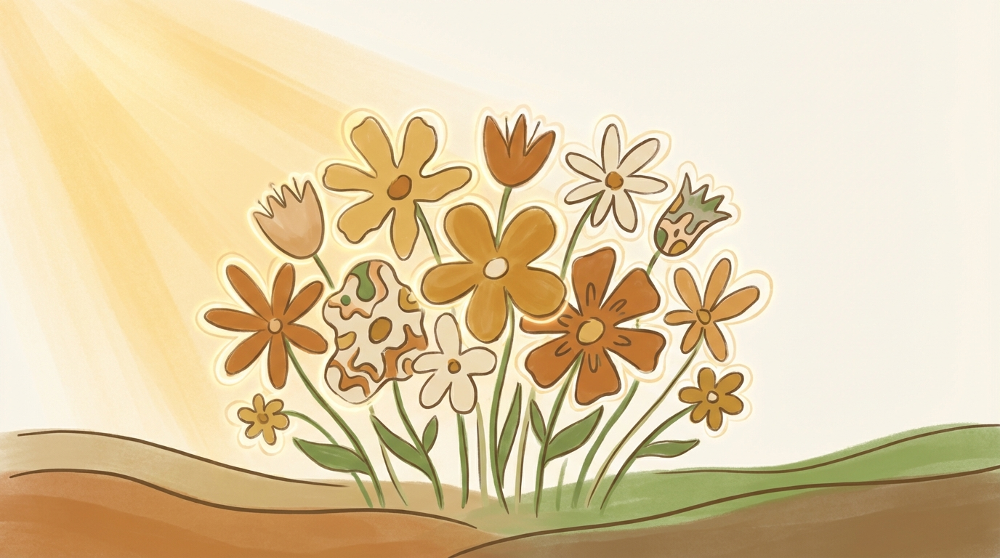

求職現場
面試完的履歷，就放著。面試時被問：「疤痕這麼恐怖，輪值夜班會不會嚇到人？」
根據就業服務法第 5 條，雇主不得以容貌歧視求職者。
本頁由淡江大學學生整理，引用陽光基金會公開資料
臉部平權，指的是不以外貌評斷一個人的價值，讓每張臉都能在生活、就學、就業中被公平對待。
你不一定認識顏面傷者，但你一定生活在「以貌取人」的社會裡。
如果你是第一次接觸這個主題，不到十分鐘，就能從「是什麼」一路到「我可以做什麼」。
不是忽視差異，而是不以外貌評斷一個人的價值，讓每張臉都能被公平對待。
臉部平權的核心很直接：外貌不應該成為評價一個人能力、性格或價值的依據。當一個人的臉上有燒傷、疤痕、先天差異或疾病痕跡，他依然和其他人一樣，應該被平等看待、被公平對待。
如果用一句話記住：不是每張臉都一樣，但每個人都一樣值得被尊重。
本站依陽光基金會公開資料整理
你每天的言行、玩笑和態度，都可能讓一個人感到被排除，或被一次又一次傷害。
外貌歧視不只發生在明顯的惡意裡，更常見的是那些「看起來沒什麼」的反應——多看幾眼、刻意迴避、把外貌當玩笑。這些不一定出於壞心，卻讓人清楚感覺到距離。
你的每一個選擇，都在形塑這個社會的氣氛。
在台灣，每 5 人就有 1 人曾因外貌受到不公平的對待——被嘲笑、被評論，或在求職中受到歧視。
這不是少數人的特殊遭遇，而是社會裡實際存在的問題。它發生在職場、校園、捷運、便利商店，就在你我的日常裡。
陽光基金會 2025 年「台灣新視角的外貌文化與遭遇調查」，n=1,123，18 歲以上全台 22 縣市
「只是開玩笑」、「只是多看一眼」，看起來無傷大雅，但對當事人可能是一次又一次的累積傷害。
當這些反應每天都在發生，人不一定會崩潰，但會慢慢變得疲憊、開始懷疑自己，甚至縮小自己的生活圈，以避開那些讓人不舒服的目光。
傷害的程度，不由施加者決定，而由承受者感受。
從求職到社交，外貌差異常常讓人承受無聲的壓力，在別人的目光和先入為主的判斷中，一次又一次被限制。
自然地相處、不追問外貌的由來、把注意力放到對話本身，就是很好的開始。
不需要完美，只要記住這幾件事，就已經很有幫助。
從少說一句外貌評論開始，多一點同理，你就能幫助讓環境變得更包容。
你可以繼續閱讀文章、觀看影片、了解陽光基金會的服務，探索這個議題如何走進真實的生活。
某些傷害不是意外，而是社會太習慣用外貌看一個人。
從面試、校園到日常對話，這些故事也許離你沒有那麼遠。

面試完的履歷，就放著。面試時被問：「疤痕這麼恐怖，輪值夜班會不會嚇到人？」
根據就業服務法第 5 條，雇主不得以容貌歧視求職者。

每天去到教室，都是一道關要過。外貌差異常常成為孤立或言語霸凌的起因。
教育部統計：校園霸凌通報件數五年內增加近五倍，外貌相關霸凌是顏面傷者的常見遭遇。

一句玩笑、一個眼神，你以為在緩和氣氛，當事人可能只是在忍著。
不需要完美，只要避免容易讓人受傷的動作，就已經很重要。
不要看一張臉，要看一個人
不用等到變成達人，從今天開始就可以改變。
在捷運、辦公室、餐廳，試試把目光放在人本身。
多一個人的理解，就多一點改變。
某些玩笑你以為無傷大雅，對當事人卻是一次又一次的傷害。